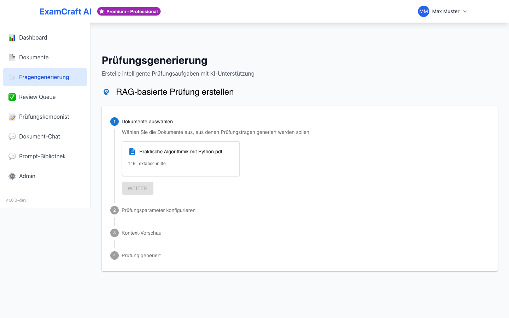

KI-Prüfungen erstellen
Generieren Sie Prüfungsfragen zu einem beliebigen Thema – ohne hochgeladene Dokumente.

Konfiguration
1. Prüfungsthema eingeben
Geben Sie ein spezifisches Thema ein:
Gute Themenformulierung
- "Python Programmierung – Listen und Dictionaries"
- "Datenstrukturen – Heapsort Algorithmus"
Vermeiden
- "Informatik" (zu allgemein)
- "Programmieren" (zu breit)
2. Schwierigkeitsgrad wählen
| Stufe | Beschreibung | Bloom-Taxonomie |
|---|---|---|
| Einfach | Grundlegendes Verständnis | Remember, Understand |
| Mittel | Anwendung und Analyse | Apply, Analyze |
| Schwer | Evaluation und Kreation | Evaluate, Create |
3. Anzahl Fragen festlegen
- Minimum: 1 Frage
- Maximum: 20 Fragen
- Empfohlen: 5–10 Fragen pro Durchlauf
4. Fragetypen auswählen
- Multiple Choice – 4 Antwortoptionen, 1 korrekt
- Offene Fragen – Freitext-Antworten
5. Sprache wählen
- Deutsch – Fragen und Antworten auf Deutsch
- English – Questions and answers in English
Generierung starten
- Klicken Sie auf Prüfung generieren
- Warten Sie 10–30 Sekunden
- Fortschrittsanzeige: "Generiere Prüfung..."
Ergebnis
Jede generierte Frage enthält:
- Fragenummer und Fragetext
- Antwortoptionen (bei Multiple Choice)
- Korrekte Antwort (gruen markiert)
- Erklärung/Begründung
- Bloom-Level
- Schwierigkeitsgrad (1–5)
Nach der Generierung
Die generierten Fragen erscheinen automatisch in der Review Queue.
Dort können Sie: - Jede Frage einzeln prüfen - Fragen genehmigen (werden für den Prüfungskomponisten freigegeben) oder ablehnen - Nach der Überprüfung eine vollständige Prüfung im Prüfungskomponisten zusammenstellen
Tipp: Erst reviewen, dann komponieren
Nehmen Sie sich Zeit für die Review Queue. Gut geprüfte Fragen machen den Prüfungskomponisten effizienter.
Häufige Fragen zu KI-Prüfungen
Wie unterscheiden sich KI-Prüfungen von RAG-basierten Prüfungen?
KI-Prüfungen werden zu einem beliebigen Thema generiert, ohne dass Dokumente hochgeladen sein müssen. RAG-Prüfungen verwenden Ihre hochgeladenen Kursmaterialien als Quelle. Wählen Sie KI-Prüfungen für allgemeine Themenschwerpunkte, RAG-Prüfungen für Inhalte, die direkt in Ihren Dokumenten enthalten sind.
Welcher Schwierigkeitsgrad ist optimal?
Das hängt vom Niveau Ihrer Lerngruppe ab. Für Anfänger: Einfach. Für Fortgeschrittene: Mittel bis Schwer. Eine Mischung ist auch möglich – generieren Sie mehrere Sets mit unterschiedlichen Schwierigkeitsgraden und kombinieren Sie sie später im Prüfungskomponisten.
Kann ich die generierten Fragen nachträglich bearbeiten?
Ja! In der Review Queue können Sie jede Frage prüfen. Bevor Sie sie genehmigen, können Sie den Fragentext oder die Antwortoptionen anpassen. Die Bearbeitung erfolgt direkt in der Queue.
Wie lange dauert die Generierung?
Typischerweise 10–30 Sekunden für 5–10 Fragen, abhängig von Thema, Schwierigkeitsgrad und Serverauslastung. Die Fortschrittsanzeige informiert Sie in Echtzeit.
Kann ich mehr als 20 Fragen generieren?
Die maximale Anzahl pro Durchlauf ist 20 Fragen. Für mehr Fragen: Führen Sie mehrere Generierungen hintereinander durch. Die neuen Fragen werden der bestehenden Review Queue hinzugefügt.
Tipps für bessere Ergebnisse
- Spezifische Themen: Je spezifischer die Formulierung, desto besser die Qualität. "Python Listen und Dictionaries" ist besser als nur "Python".
- Angemessene Schwierigkeitsgrade: Wählen Sie Schwierigkeitsgrade, die dem Lernstand Ihrer Lernenden entsprechen.
- Regelmässiges Reviewen: Überprüfen Sie Fragen zeitnah, um die Qualität zu sichern. Je schneller Sie feedback geben, desto besser passt sich die KI an.
- Vielfalt erzielen: Generieren Sie mehrere Durchläufe mit unterschiedlichen Schwierigkeitsgraden und Fragetypen.